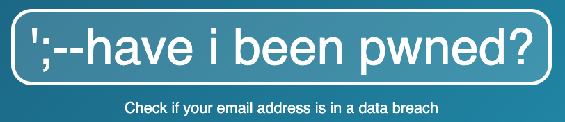
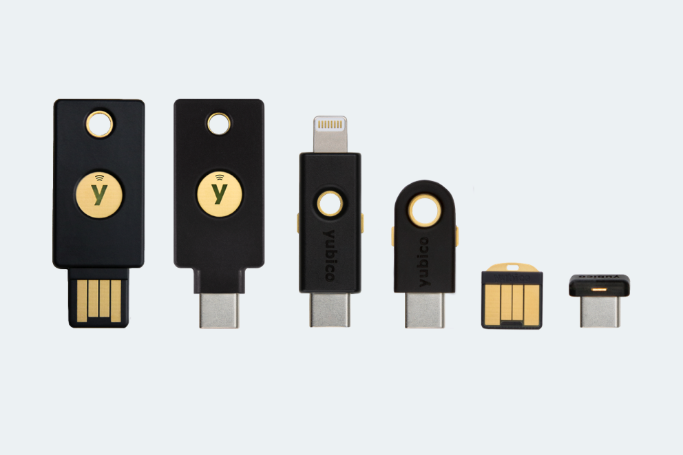
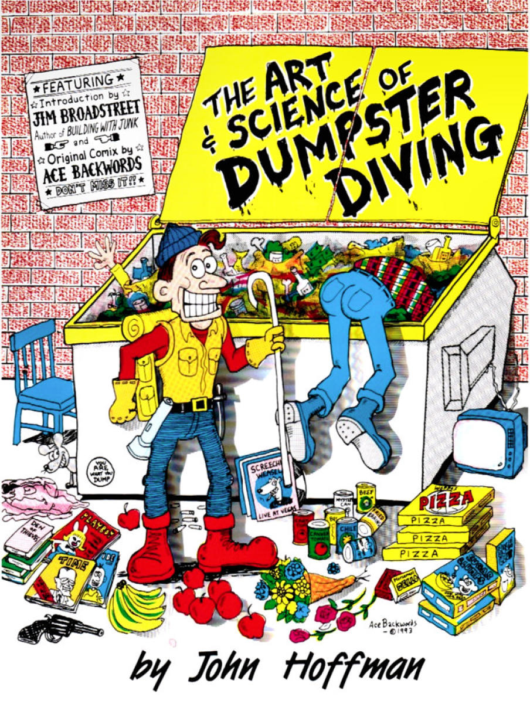
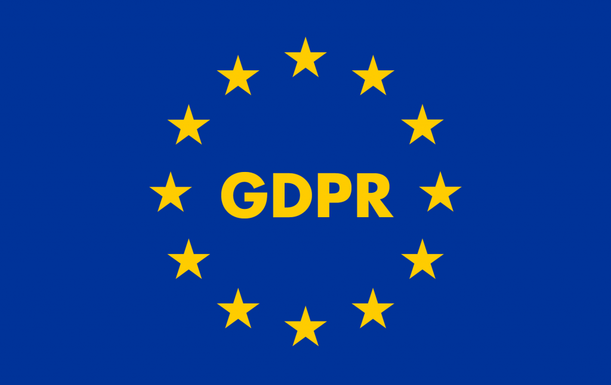

<div class="center"> <h1>Staying Safe Online</h1> <p><img src="../../files/talks/codebender-logo.svg" alt="Third Bit logo" width="20%" /></p> <p>Greg Wilson</p> <p><img src="../../files/talks/cc-by.svg" width="20%" alt="CC-BY" /></p> </div> --- <div class="center padtop"> <h1>Staying Safe Online</h1> <p><img src="../../files/talks/codebender-logo.svg" alt="Third Bit logo" width="15%" /></p> <p>Greg Wilson</p> <p><a href="http://third-bit.com/talks/safety/">http://third-bit.com/talks/safety/</a></p> <p><img src="../../files/talks/cc-by.svg" width="20%" alt="CC-BY" /></p> </div> --- ## Introduction - Researchers are increasingly targeted and harassed online - Sexual health, vaccines, climate change, gun violence, … - Hollywood's depictions of these threats are unrealistic - A few simple rules will keep you safe(r) <!-- Image credit: Max Bender, https://unsplash.com/photos/XIVDN9cxOVc --> --- class: aside ## You vs. the data you collect - This talk is about keeping *you* safe - Keeping the data you collect for your research safe is a different (but related) problem - Though compromising you is often the fastest way to get at that data --- ## 1. We have to look after ourselves - Companies and universities' rules protect them, not you - Much institutional security is performative [*security theater*](https://www.schneier.com/tag/security-theater/) - E.g. forcing regular passwords changes makes people choose passwords they can remember easily (which are insecure) - We have to put on our own masks <img src="oxygen-masks.jpg" alt="Oxygen masks" width="40%" class="center"/> --- ## 2. The real world matters too - Most attacks take place offline - *Social engineering* is a much bigger threat than digital hacking - "Smart spies don't break in: they get jobs as bartenders." - Modern smartphone cameras increase the power of shoulder surfing - It's very easy to get a legible picture of a page or screen from a distance - Rely on *situational awareness* - Be more careful when working on controversial things or in public places - De-escalate at other times to avoid *security fatigue* <!-- At an airport several years ago, I heard a professor of computer science try to reset an online account over the phone. In just a couple of minutes they had inadvertently told everyone in the lounge their full name, their date of birth, the three-digit verification code on the back of their credit card, and what was almost certainly their mother's maiden name. --> --- ## 3. Understand your threat models - You probably aren't targeted by state-level actors - If you are, there's little you can do - But Apple does have [Lockdown Mode](https://support.apple.com/en-us/HT212650) - Effective, practical security comes from simple *preventive* routine - "I'll brush my teeth when I have cavities" doesn't work <!-- [James Mickens has observed](https://www.usenix.org/system/files/1401_08-12_mickens.pdf) that if the Mossad is going to Mossad you, you're getting Mossadded and there's not much you can do about it. Image credit: Lafayett Zapata Montero, https://unsplash.com/photos/boy-in-blue-long-sleeve-shirt-drinking-from-a-feeding-bottle-loBRFqXm1QA --> --- ## 3.1 Casual threats - A student in your class hangs out in online echo chambers with other young men complaining about SJW bullshit - He and his friends decide to target you with anonymous online abuse for the lolz - Low skill level and unlikely to invest significant effort - But may be backed up by more knowledgeable (and more committed) forum members seeking to radicalize him - Who might also scale up the attack <!-- This is the most common threat model for most researchers. It's easy to defend against up close (i.e., direct hacking) but online harassment is woefully under-policed. --> --- ## 3.2 Intimate threats - Abusive/controlling ex-romantic partner - Everything created for parents to track children has been repurposed - Lots of online forums with "helpful" advice - Knows the name of your first pet - Has/had opportunities to install spyware on your devices - Apple AirTags are a real-life version of the tracking devices in spy movies and are easy to plant in a coat, purse, or car - Lone attacker, but very persistent <!-- Domestic abuse is the infosec threat model we don't like to talk about because it's the hardest to solve. An abuser likely has uncontrolled long term access to the victim's hardware, and the possibility of physical abuse is immediate. One of the first things you're given at a shelter is a clean phone. --> --- ## 3.3 Insider threats <div class="row"> <div class="col-3"> <p> </p> </div> <div class="col-9"> <ul> <li>Somebody always has their hands on the hardware</li> <li>Whistleblowers use privileged access for good</li> <li>But access can just as easily be used for profit <ul> <li>Or in response to blackmail</li> <li>Or for a cause they genuinely believe in</li> </ul> </li> <li>One motivation for this talk is to help you safety-check things you are asked/told to do</li> </ul> </div> </div> <!-- There's no way to distinguish good motives from malicious ones at the wire level: there's no "evil" bit to flip. image credit: Tadeu Jnr, https://unsplash.com/photos/woman-standing-near-glass-while-looking-camera-zJ7viaRABWQ --> --- ## 3.4 Commercial threats - Professionals don't care about you: they're in it for the money - *Phishing attacks* are a game of percentages - If you send a million emails, someone will click the link - So will someone if you spoof the WiFi at a coffee shop - Anti-virus software and similar measures help with this - A bike lock's real purpose is to make it easier for a thief to steal someone else's bike - You *do* have an anti-virus installed, right? <!-- Professionals are technically savvy but not interested in you personally. --> --- <!--# class=aside --> ## Traces - You have been leaving parts of yourself online for years - Existing breaches leaked to the dark web let even low-level attackers see billions of leaked records - Check [https://haveibeenpwned.com/](https://haveibeenpwned.com/) to see which you are included in - Sign up to find out what services you need to change passwords for - And set up [Google Alerts](https://www.google.com/alerts) for your name, email address, etc.  --- <!--# class=aside --> ## Keep your software up to date - Yeah, the downloads are annoying… - …but many (most?) are security fixes - This is especially critical for your browser --- ## 4. Use a password manager - Weak passwords can be broken by *dictionary attacks* - *Every* clever scheme you come up with has been thought of before - A *password manager* generates strong passwords for you - Your *passphrase* should be several words long - And *not* a sentence - [1Password](https://1password.com) is my favorite - *Not* LastPass, whose breaches have leaked millions of passwords - But who will read my email when I'm dead? <!-- It's OK if you can't remember your passwords - in fact, it's better. --> --- <!--# class=aside --> ## Scraps of paper <div class="row"> <div class="col-4"> </div> <div class="col-8"> <ul> <li>Writing passwords down isn't such a bad idea</li> <li>You have a lifetime of practice keeping track of papers and notebooks, and you'll probably notice if they're stolen</li> <li>Putting a sticky note on your desk, on the other hand…</li> </ul> </div> </div> <!-- Image credit: Justin Morgan, https://unsplash.com/photos/Hx-4TbpsoIw --> --- ## 5. Use two-factor authentication - *Authentication* relies on: - Something you know (like a password) - Something you have (like a security key) - Something you are (e.g., your fingerprints) - *Two-factor authentication* (2FA) requires two of these - Use an app rather than text messages - *Never* share an authentication code <!-- Use an app rather than SMS because of SIM swapping, network snooping, and other attacks. But note: not everyone has a phone… --> --- <!--# class=aside --> ## VPNs and Tor, oh my - Incognito browsing doesn't store history, but doesn't make you invisible to your ISP - Or the coffee shop owner, or… - SMS messaging (texts) are basically in the clear - A *virtual private network* (VPN) connects to a server then has that server connect to other sites on your behalf - [Mullvad](https://mullvad.net/en) - [Tor](https://www.torproject.org) routes messages randomly through a network of servers - Protects both terrorists and human rights activists - Both reduce some risk, but again: what is your threat model? - Please use [Signal](https://www.signal.org/) or [Threema](https://threema.ch/) <!-- VPNs protect the institution more than they protect you. --> --- <!--# class=aside --> ## YubiKeys  - Dedicated password storage with push-button access <!-- Set this up for your email inbox. Don't use SMS or an app for this: the odds are good that your inbox is a skeleton key for your entire life. One Yubikey goes on your keychain, the other goes in the back of your sock drawer. --> --- ## 6. Check before opening - Microsoft Office documents are actually programs - Which run automatically when you open them - So institutional emails are training us to be hacked - The text of a link in email or on a web page can say anything - And domain names like paypa1.com are hard to spot - If someone from your bank asks you for information to confirm your identity, call them back using the number in the phone book <!-- My bank used to send messages to me as encrypted HTML files with a bit of JavaScript in them and then send the password as clear text to the same email address. Can you count how many things are wrong with this? --> --- ## 7. Erase before discarding - Emptying the trash doesn't erase files - Encrypting your hard drive helps is quick and easy - [BitLocker](https://learn.microsoft.com/en-us/windows/security/operating-system-security/data-protection/bitlocker/) on Windows, [FileVault](https://support.apple.com/en-ca/guide/deployment/dep82064ec40/web) on MacOS - Use secure deletion tools like [BleachBit](https://www.bleachbit.org) or [FileShredder](https://www.fileshredder.org) before discarding any hardware  --- <!--# class=aside --> ## Online is forever - Shredding files doesn't affect sites like Dropbox - Or things you posted on social media - But the EU now has a [right to be forgotten](https://gdpr.eu/right-to-be-forgotten/), which is a big step in the right direction - And California now requires it to be a single-step process - See e.g. [https://globalprivacycontrol.org/](https://globalprivacycontrol.org/)  --- ## 8. Check accounts periodically - Building social media around ad revenue was one of my generation's biggest mistakes - Which is saying a lot… - "If you don't pay for the service, you're the product" - *Stop using ~~Twitter~~ X* - Use a tracking blocker like [uBlock Origin](https://ublockorigin.com/) - Companies frequently change their terms - So check your settings at the start of every semester - Or some other biannual event --- <!--# class=aside --> ## Travel - Some people use separate devices for work and personal life - That's increasingly unrealistic - Others use a burner phone when traveling internationally - But that can arouse suspicion --- <!--# class=aside --> ## And now, AI - AI is writing malware and ransomware in industrialized quantities - And language models are really good at predicting human password choices - Companies are strip-mining user data to train models - Or to sell to companies that are training models - Remember, Leland Stanford ran a grocery store… - You should be able to say "no" - Or to be paid a negotiable rate for its use --- ## 9. Help fight back - Casual attackers may eventually move on - But will also often revisit previous victims - And will usually find new ones <div class="row"> <div class="col-4"> </div> <div class="col-8"> <ol> <li>Do not engage directly</li> <li>Report the attack</li> <li>Find support</li> <li>Use anti-harassment apps like <a href="https://www.blockpartyapp.com">Block Party</a></li> </ol> </div> </div> <!-- Image credit: Diana Wing So, https://unsplash.com/photos/Le1tP8M9flQ --> --- ## 10. It's not just about you - The only long-term solution to these problems is legislative - Cars and drugs are safe(r) because of liability legislation - Which auto and pharma companies still fight against - Combating hate speech and radicalization is part of the solution - As is end-to-end encryption <blockquote> Man I can't honestly tell if it's just transference because I don't know what to do with my anger and pain about it, but it sure does fucking suck that every alt-right influence the Christchurch shooter cites makes money via Shopify. <br> – Johnathan Nightingale, March 15, 2019 </blockquote> <!-- We wear masks to keep others safe, too. --> --- ## Resources - [Zebra Crossing digital safety checklist](https://github.com/narwhalacademy/zebra-crossing) - Consumer Reports' [Security Planner](https://securityplanner.consumerreports.org/) - [Security in a Box](https://securityinabox.org/) - [How journalists can work from home](https://freedom.press/training/blog/wfh-securely/) - [Tall Poppy](https://www.tallpoppy.com/resources) --- ## Thank You <div class="center"> <p><img src="../../files/talks/gvwilson.png" width="40%"></p> <p> <a href="http://third-bit.com">Greg Wilson</a> <br> <a href="mailto:gvwilson@third-bit.com">gvwilson@third-bit.com</a> <br> <a href="http://third-bit.com/talks/safety/">http://third-bit.com/talks/safety/</a> </p> </div>